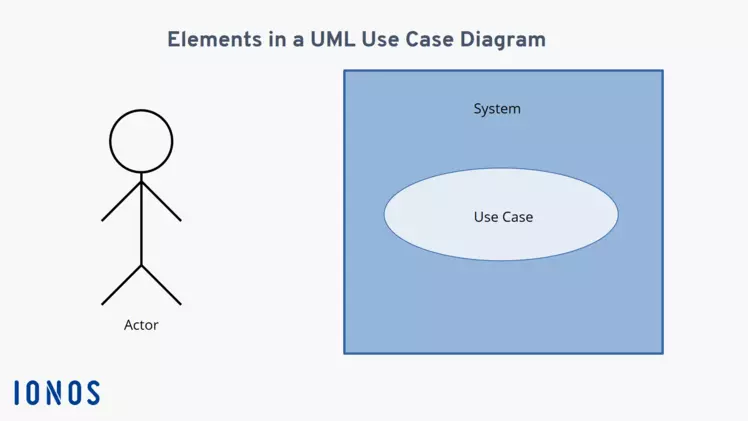
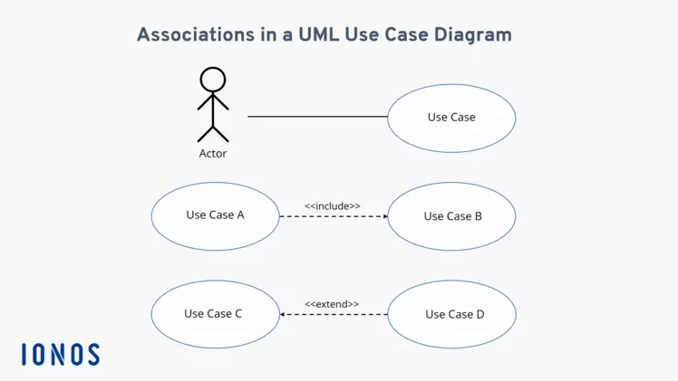
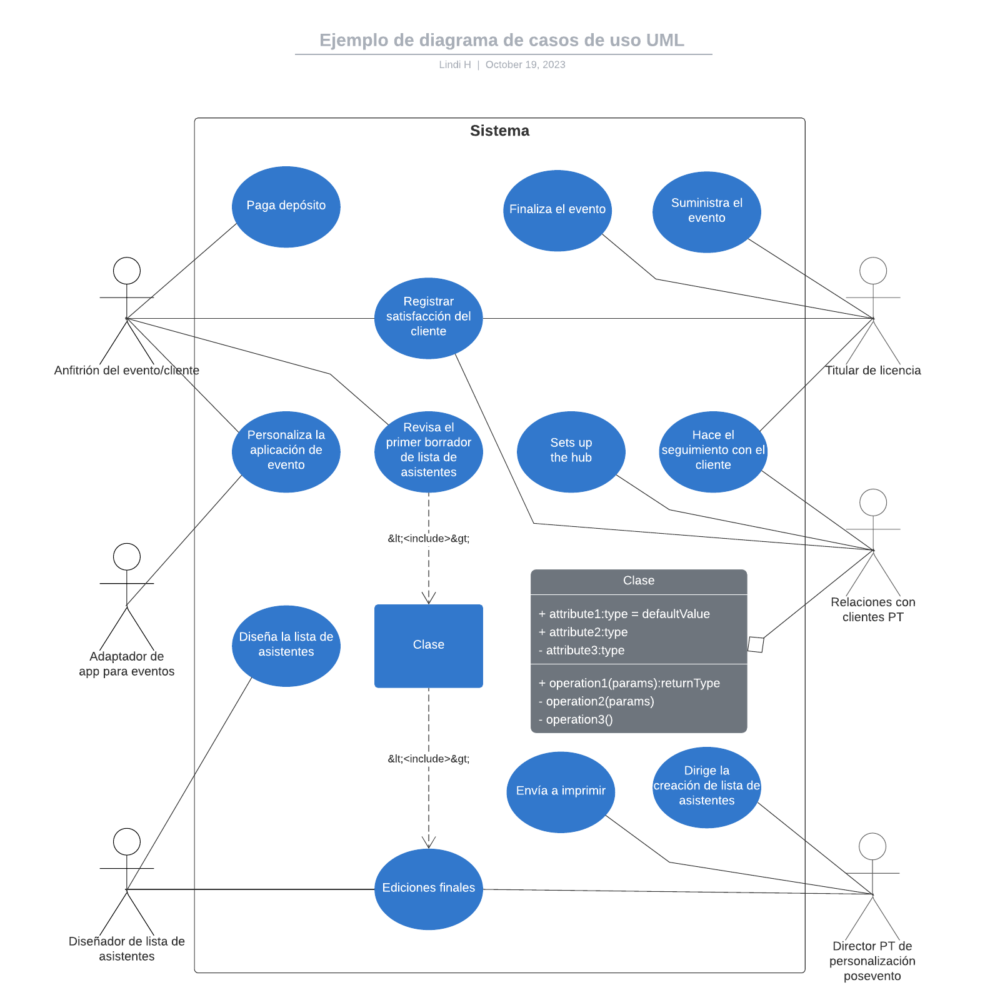
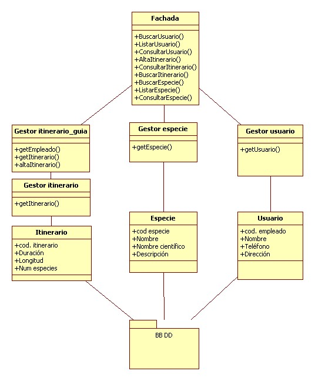

Fecha: 07 de noviembre 2023
Nota: Para la clase de programación II, es recomendable practicar (jugar) mecanografía
IDE Visual Studio Code 
Visual Studio Code es un editor de código fuente y de código abierto. Destaca por ser multiplataforma y será el utilizado en esta materia.
La consola o terminal, es una interfaz de línea de comandos que permite inteactuar a los usuarios con el sistema operativo.
Es recomendable personalizarla para que el ambiente sea más acogedor debido a que se trabajará en ella frecuentemente.
Para hacerlo más amigable con el usuario se utilizará:
Dentro de este se encuentran las instrucciones para personalizar el terminal tanto de PowerShell como el Gitbash, permitiéndole personalizar:
Los cambios efectuados en estos, se verán contemplado en VSCode.
workdirectory: workspace --> directorio de trabajo
Fecha: 08 de noviembre de 2023
Papeleta de Comandos: CTRL + SHIF + P
Y escribir "Abreviatura de comandos"
Abrir terminal: CTRL + J
Quick Open: CTRL + P
Esto servirá para cambiar entre archivos.
Togle Sidebar: CTRL + B
Abrirá y cerrará rápidamente el menú lateral izquierdo (esqueleto).
Multi cursor (Multi-Select): CTRL + D, CTRL + F2
Con este se crearán cursores en diversas líneas de donde se tenga la palabra seleccionada.
Es importante recalcar que CTRL + F2 realizará el cambio en todo el documento.
Cortado matricial: ALT + SHIFT RATÓN
Es importante poner el cursor en el prinicipio, aplastar el cortar y posteriormente marcar hasta el final, siendo así que cortará en forma de matriz.
Copy Line: SHIFT + ALT + UP or SHIFT + ALT + DOWN
Repetirá la linea seleccionada en dirección a la cual se le haya indicado con el up y down del teclado.
Mover la linea seleccionada: ALT + UP or DOWN
Moverá la línea o bloque seleccionado en dirección que se le indique.
Comentar en bloque (Multi-Line): ALT + SHIFT +A
Comenta en forma varias línea al mismo tiempo
Ejemplo:
/* código escrito
código escrito */
No se puede descomentar en forma de comando.
Comentar una línea (Single line): CTRL + K + C Comenta como si fuera una sola línea (puede funcionar seleccionando varias líneas).
Para descomentar la o las líneas se utilizará CTRL + K+ U.
Line cut : CTRL + X
Vista previa lateral: CTRL + K + V
Cerrar: CTRL +F4
Dividir pantalla: CTRL + SHIFT + 5
CERRAR UN PROCESO EJECUTADO: CTRL + C
MarkDown

| Funcionalidad | Símbolo | Muestra |
|---|---|---|
| Título Grande | # | |
| Título Mediano | ## | |
| Título Pequeño | ### | |
| Palabras en negrita | palabra | palabra |
| Palabras en cursiva | palabra | palabra |
| Palabras en negrita y cursiva | palabra | palabra |
| Texto tachado | ~~ Texto ~~ |
Nota: Los títulos no se pueden mostrar debido a que no cumple con las reglas de MD al mostrarlo así.
Para crear enlaces, encierra el texto del enlace entre corchetes [] y luego coloca la URL del enlace entre paréntesis ().
Ejemplo:
[Texto del enlace](http://www.ejemplo.com)
Para insertar imágenes, se agrega un signo de exclamación (!) al principio.
Ejemplo:
! [Texto alternativo] (ruta/imagen.jpg)
Utiliza el carácter de barra vertical (|) para separar las columnas y los guiones (-) para definir la línea de encabezado y separar las filas de la tabla. Por ejemplo:
| Encabezado 1 | Encabezado 2 | Encabezado 3 |
|---|---|---|
| Dato 1 | Dato 2 | Dato 3 |
| Dato 4 | Dato 5 | Dato 6 |
Puedes alinear el texto en las columnas utilizando dos puntos ( : ) antes o después del guion de separación. Por ejemplo, :--- alinea a la izquierda, ---: alinea a la derecha y :---: alinea al centro. Por ejemplo:
| Alineado a la izquierda | Alineado al centro | Alineado a la derecha |
|---|---|---|
| Dato 1 | Dato 2 | Dato 3 |
| Dato 4 | Dato 5 | Dato 6 |
Para crear código en una línea utiliza el acento grave (`). Por ejemplo:
var nombre = "John";.
Para insertar colores al texto será necesario escribir de la siguiente manera:
<span style="color: #RRGGBB;">Este texto es de color #RRGGBB</span>
La sintaxis general para ponerle colores al texto Markdown es la siguiente:
<span style="color: #RRGGBB;">Este texto es de color #RRGGBB</span>
Donde:
#RRGGBB es el valor hexadecimal del color.El valor hexadecimal del color está compuesto por dos pares de números hexadecimales, cada uno de los cuales representa un componente del color:
EJEMPLO:
| COLOR | SINTÁXIS | VISUALIZACIÓN |
|---|---|---|
| Blanco | #FFFFFF | Este texto es blanco |
| Rosa pastel | #FFF0F5 | Este texto es rosa pastel |
| Verde | #F0FFF0, #CCFFCC | Verde lima Verde pastel |
| Verde | #00FF00 | Este texto es verde |
| Amarillo | #FFFFE0, #FFFACD | Amarillo pastel, Amarillo claro |
| Lavanda pastel | #E0FFFF | Este texto es lavanda pastel |
| Azul | #B2FFFF, #AFEEEE | Azul pastel,Azul cielo |
| Cian | #00FFFF | Este texto es cian |
| Azul | #0000FF | Este texto es azul |
| Magenta | #FF00FF | Este texto es magenta |
| Naranja pastel | #FFE0B2 | Este texto es naranja pastel |
| Amarillo | #FFFF00 | Este texto es amarillo |
| Naranja brillante | #FF7F45 | Este texto es naranja más brillante |
| Naranja más fuerte | #FF9F00 | Naranja mas fuerte |
| Naranja fuerte | #FF7F00 | Este texto es naranja fuerte |
| Rojo | #FF0000 | Rojo |
| Gris | #EEEEEE, #D3D3D3 | Gris claro,Gris oscuro |
| Negro | #000000 | Este texto es negro |
Fecha: 9 de noviembre de 2023
GIT 
Es un sistema de control de versiones distribuido que permite a los desarrolladores rastrear los cambios en los archivos y el código fuente. Permitiendo hacer un seguimiento del código.
| COMANDOS | FUNCIONALIDAD |
|---|---|
| git config --global user.name "nombre" | Crea tu usuario con el nombre que le indiques |
| git config --global user.email [email] | Valida tus credenciales con tu email |
| git config user.name | Verificar la identidad del usuario |
| git config user.email | Verificar el email del usuario |
| git init | Inciacializar repositorio se liga con el branch master |
| git add | Añadir todo lo que hay en el directorio actual |
| git add fileName.ext | Agrega el documento indicado |
| git status | Revisa las condiciones en las que estás trabajando, es decir (commits or branch master). |
| git reset | Se utiliza para restablecer el estado del repositorio de Git a un punto anterior en el historial. Puede utilizarse para deshacer cambios locales, descartar commits o volver a una rama anterior. |
| git rm --cached git rm --cached | Esto para quitar el documento seleccionado que se agregó |
| git commit-m "C1: prj-start" | Inicia el commit, es una instantánea de los cambios realizados en un proyecto. Cada commit contiene archivos modificados,cambios realizados en cada archivo, mensaje de confirmación |
| git branch "master" | Renombrar la rama master a "main" |
| git switch "NameBranch" | Se cambia a la rama indicada |
| git branch | Muestra cuantas ramas existen y en que rama nos encontramos con un (*), considerar que esta se crea con todo el contenido que se tiene |
| git log | Para ver el historial de cambios |
Cada que se agrega un archivo, estos se agregan a una rama main, esto se llama BRANCH
>---- branch --- git:(master / main)
Archivos a comitear
o
Archivos no agregados
El nombre del código se encuentra resaltado
[master (root-commit) ac362b4] C1: prj-star
Y este se vera modificado con cada commit y su respsectivo comentario
Recuerda que debes hacer un solo documento, no varios
GitBash
Es un sistema operativo de código abierto y gratuito que se basa en el núcleo Linux. El núcleo Linux es el software que gestiona directamente el hardware de un sistema y sus recursos, como la CPU, la memoria y el almacenamiento
Dato curioso: Linux y Gitbash fue creado por Linus Torvalds.
Por ello GitBash es un acercamiento a Linux.
| COMANDOS | FUNCIONALIDAD |
|---|---|
| pwd | ver el directorio actual (dir. actual) |
| tab | Autocompletar |
| cd | Volver al directorio, con ctrl+a, e edita el nombre el fichero |
| cd "nombreArchivo"/ | Entra al archivo |
| cd .. | Entra al archivo ctrl+a, e edita el nombre el fichero |
| ls | Listado del fichero con ctrl +r (buscar) |
| ls-l | Listado del fichero (vertical) ctrl +r (buscar) |
| touch file.txt | Crea un fichero |
| echo "Texto a imprimir" >> fileNAME.extension | Se utiliza para imprimir texto en la terminal de Git Bash |
| cat file.txt | Permite visualizar el contenido de los archivos en la terminal de Git Bash. ctrl + l o clear (limpiar la terminal) |
| rm archivo.txt | Elimina el archivo |
| rm -r carpeta1 | Eliminar un directorio |
| rm archivo1.txt archivo2.txt | Eliminar varios archivos |
| rm -r carpeta1/ | Eliminar un archivo de forma recursiva |
| rm -i archivo.txt | Eliminar un archivo de forma segura |
| cp file.txt newfile.txt | Copiar |
| mv file.txt newfile.txt | Renombrar |
| ls -a | Se utiliza para listar todos los archivos y directorios, incluidos los archivos ocultos, en la terminal |
Para terminar un proceso Cntrl + c
GitHub

Es una plataforma de desarrollo de código fuente que facilita a los desarrolladores colaborar en proyectos de código. Ademas de ser una herramienta para colabarar en codigo.
Fecha: 10 de noviembre 2023
JAVA 
El equipo original de la empresa estaba formado por James Gosling, Eric Schmidt, John Gaga, Patrick Naughton y Wayne Rosing.
El proyecto fue dirigido por James Gosling, quien se inspiró en su trabajo en el lenguaje de programación C++, que era un lenguaje poderoso pero complejo. Gosling quería crear un lenguaje que fuera más fácil de aprender y usar, pero que aún así fuera potente y capaz.
El nombre "Java" proviene de la isla de Java, en Indonesia. Gosling quería un nombre que fuera corto, fácil de recordar y que evocara una sensación de exotismo y aventura.
Es un lenguaje de programación multiplataforma, seguro y orientado a objetos que se utiliza para crear una amplia gama de aplicaciones.
Su finalidad es crear software para una amplia gama de dispositivos y plataformas. Es un lenguaje de programación multiplataforma, lo que significa que el código escrito en Java se puede ejecutar en cualquier plataforma que tenga instalada la Máquina Virtual Java (JVM). Esto hace que Java sea una opción popular para el desarrollo de aplicaciones móviles, ya que las aplicaciones Java se pueden ejecutar en dispositivos Android, iOS y Windows Phone.
proyecto
paquete
src
clase
metodos
variables
constantes
El código debe estar bien estructurado y organizado. Se recomienda utilizar sangrías y espacios en blanco para mejorar la legibilidad del código.
La clase main es la clase que se ejecuta cuando se inicia un programa Java. La sintaxis de una clase main en Java es la siguiente:
public class Nombre_de_la_clase{
public static void main(String[] args){
/* Methods
* Variables
* Constantes
*/
}
}
La palabra clave public: indica que la clase es accesible desde cualquier parte del programa.
La palabra clave class: indica que se está declarando una clase.
El nombre de la clase: es una cadena de caracteres que identifica a la clase.
La palabra clave public: indica que el método main es accesible desde cualquier parte del programa.
La palabra clave static: indica que el método main no está asociado a ningún objeto.
La palabra clave void: indica que el método main no devuelve ningún valor.
El nombre del método: es una cadena de caracteres que identifica al método.
Los argumentos: son los datos que se pasan al método main cuando se llama. Los argumentos pueden ser de cualquier tipo de dato.
El cuerpo del método: es el código que se ejecuta cuando se llama al método main.
IMPORTANTE:
La clase main es una parte esencial de cualquier programa Java. Es la clase que inicia el programa y ejecuta su código.
El codigo siempre debe contener esa estructura para que funcione el programa. Por ello es importante que las llaves { } se encuentren bien colocadas, caso contrario nos arrojara un problema.
Ademas de siempre controlar cada linea de codigo con un ; para que valide aquella linea.
Ejemplo:

| Command | Funcionalidad |
|---|---|
| java nombre del archivo.java | Compila el programa en consola |
| cat nombre del archivo.java | Muestra lo que tiene el archivo escrito |
Fecha: 14 de noviembre 2023
Nota: Cuando se habla de creación de procedimiento se habla de una programación estructurada.
Dato curioso: El area mejor pagada dentro de JAVA es Java EE.
Son instrucciones que permiten alterar el flujo normal de ejecucion de un programa. Existen tres tipos de estructuras:
Estas estructuras permiten ejecutar un bloque de código dependiendo de si se cumple o no una condición
if-else:
Esta estructura permite ejecutar un bloque de código si se cumple una condición, o un bloque diferente de código si no se cumple la condición.
int numero = 10;
if (numero > 5) {
System.out.println("El número es mayor que 5");
} else {
System.out.println("El número es menor o igual que 5");
}
Switch:
Esta estructura permite ejecutar un bloque de código diferente en función del valor de una variable.
int dia = 2;
switch (dia) {
case 1:
System.out.println("Es lunes");
break;
case 2:
System.out.println("Es martes");
break;
default:
System.out.println("No es un día de la semana");
break;
}
Estas estructuras permiten ejecutar un bloque de código repetidamente
For:
Esta estructura permite ejecutar un bloque de código un número determinado de veces.
for (int i = 0; i < 10; i++) {
System.out.println(i);
}
While: Esta estructura permite ejecutar un bloque de código mientras se cumpla una condición.
int i = 0;
while (i < 10) {
System.out.println(i);
i++;
}
Do-while:
Similar a la estructura while, pero el bloque de código se ejecuta al menos una vez, incluso si la condición no se cumple.
int i = 0;
do {
System.out.println(i);
i++;
} while (i < 10);
Estas estructuras permiten saltar a una instrucción específica en el código.
Break:
Permite salir de un bucle.
for (int i = 0; i < 10; i++) {
if (i == 5) {
break;
}
System.out.println(i);
}
Continue:
Permite pasar a la siguiente iteración de un bucle.
for (int i = 0; i < 10; i++) {
if (i == 5) {
continue;
}
System.out.println(i);
}
Return:
Permite salir de una función y retornar un valor en especifico.
public int sumar(int a, int b){
if (a < 0 || b < 0) {
return -1;
}
return a + b;
}
Es un bloque de código que se puede llamar desde cualquier parte del programa.
Se utilizan para realizar tareas específicas, como calcular una suma, mostrar un mensaje o leer un archivo.
La estructura de un método en Java es la siguiente:
[ modificadores ] tipo_de_retorno nombre_del_metodo([ argumentos ]) {
// código del método
}
Los modificadores son opcionales y se utilizan para controlar el acceso al método. Los tipos de modificadores que se pueden utilizar son:
public: el método es accesible desde cualquier parte del programa.
protected: el método es accesible desde la misma clase y sus subclases.
private: el método solo es accesible desde la misma clase.
El tipo de retorno es el tipo de dato que se devuelve por el método. Si el método no devuelve ningún valor, el tipo de retorno es void.
El nombre del método es una cadena de caracteres que identifica al método.
Los argumentos son los datos que se pasan al método cuando se llama. Los argumentos pueden ser de cualquier tipo de dato.
El cuerpo del método es el código que se ejecuta cuando se llama al método.
Ejemplo:
public int sumar(int a, int b) {
return a + b;
}
Este método se llama sumar y tiene dos argumentos, a y b. El tipo de retorno del método es int, que indica que el método devuelve un valor de tipo entero. El cuerpo del método simplemente suma los valores de los argumentos y devuelve el resultado.
Pueden tener cualquier número de argumentos y cualquier tipo de retorno.
Se pueden utilizar para modularizar el código y hacerlo más fácil de entender y mantener. También se pueden utilizar para reutilizar el código en diferentes partes del programa.
Se pueden utilizar en:
Es una plantilla que define la forma de un objeto.Usa una especificación de clase para construir objetos
class NombreDeLaClase {
// Declaraciones de variables
// Declaraciones de métodos
}
En Java, una clase es una plantilla que define la forma de un objeto. Especifica los datos y el código que operará en esos datos. Java usa una especificación de clase para construir objetos. Los objetos son instancias de una clase.
Una clase se define utilizando la palabra clave class. La sintaxis de una clase en Java es la siguiente:
class NombreDeLaClase {
// Declaraciones de variables
// Declaraciones de métodos
}
Utiliza el código con precaución. Más información Las declaraciones de variables definen los datos que almacenará la clase. Las declaraciones de métodos definen las acciones que puede realizar la clase.
Ejemplo:
class MiClase {
// Declaraciones de variables
int numero;
String nombre;
// Declaraciones de métodos
public void saludar() {
System.out.println("Hola, mi nombre es " + nombre);
}
}
Para crear un objeto de una clase, se utiliza la palabra clave new. La sintaxis para crear un objeto de una clase es la siguiente:
NombreDeLaClase objeto = new NombreDeLaClase();
| Característica | Clase | Método |
|---|---|---|
| Definición | Plantilla que define la forma de un objeto | Bloque de código que se puede llamar desde cualquier parte del programa. |
| Datos | Almacena datos | No almacena datos |
| Código | Define acciones que puede realizar la clase | Ejecuta acciones |
| Acceso | Puede ser privado, protegido, público o por defecto | Puede ser público, protegido o privado |
| Instancias | Puede crearse una instancia de la clase | No se puede crear una instancia de un método |
Por ejemplo, la siguiente clase define una clase llamada Persona con dos variables, nombre y edad, y un método, saludar():
class Persona {
// Declaraciones de variables
String nombre;
int edad;
// Declaraciones de métodos
public void saludar() {
System.out.println("Hola, mi nombre es " + nombre);
}
}
| Operator | Name | Example |
|---|---|---|
| + | Adicion | x + y |
| - | Reduccion | x - y |
| * | Multiplicacion | x * y |
| / | División | x / y |
| % | Módulo | x % y |
| ++ | Incremento | ++x |
| -- | Decremento | --x |
| && | Y | Logical and x < 5 && x < 10 |
| l l | O | Logical or x < 5 l l x < 4 |
| ! | Logical not | !(x < 5 && x < 10) |
| == | Equal to | x == y |
| != | Not equal | x != y |
| > | Greater than | x > y |
| < | Less than | x < y |
| >= | Greater than or equal to | x >= y |
| <= | Less than or equal to | x <= y |
| Operator | Example | Same As |
|---|---|---|
| = | x = 5 | x = 5 |
| += | x += 3 | x = x + 3 |
| -= | x -= 3 | x = x - 3 |
| *= | x *= 3 | x = x * 3 |
| /= | x /= 3 | x = x / 3 |
| %= | x %= 3 | x = x % 3 |
| &= | x &= 3 | x = x & 3 |
| l= | x l= 3 | x = x l 3 |
| ^= | x ^= 3 | x = x ^ 3 |
| >>= | x >>= 3 | x = x >> 3 |
| <<= | x <<= 3 | x = x << |
Es un paradigma de programación que organiza el código en torno a objetos. Son entidades que tienen estado y comportamiento. El estado de un objeto se representa mediante variables, y el comportamiento de un objeto se representa mediante métodos.
Un ejemplo de la vida cotidiana de la POO es una persona. Una persona tiene estado, como su nombre, edad y dirección. También tiene comportamiento, como caminar, hablar y comer.
La clase Persona tendría variables para almacenar el estado de la persona, como su nombre, edad y dirección. También tendría métodos para representar el comportamiento de la persona, como caminar, hablar y comer.
Por ejemplo, la clase Persona podría tener las siguientes variables:
nombre: El nombre de la personaedad: La edad de la personadireccion: La dirección de la personaTambién podría tener los siguientes métodos (acciones):
caminar(): Hace que la persona caminehablar(): Hace que la persona hablecomer(): Hace que la persona comaOtros ejemplos:

Fecha: 16 de noviembre 2023
El compilador de Java es un programa informático que traduce el código fuente escrito en Java a código de máquina, que es un conjunto de instrucciones que puede ser ejecutado directamente por la computadora.
Una instancia es un objeto concreto creado a partir de una clase, es decir, una representación específica de una clase. Tiene un estado y un comportamiento definidos por la clase a la que pertenece
Por ejemplo, la clase Persona podria tener las siguientes variables de instancia:
nombre: Nombre de la persona.edad: Edad de la persona.Las instancias se crean utilizando el operador new. Por ejemplo:
Persona persona = new Persona();
Este código crea un objeto de la clase Persona con el estado y el comportamiento predeterminados de la clase Persona.
Los objetos en Java pueden acceder a sus datos y métodos mediante el operador de acceso [.]. Por ejemplo, el siguiente código imprime el nombre de una persona:
Persona persona = new Persona();
persona.nombre = "Juan Pérez";
System.out.println(persona.nombre); // Imprime "Juan Pérez"
Es una herramienta de desarrollo de software que permite a los desarrolladores encontrar y corregir errores en el código fuente. Los depuradores proporcionan una variedad de funciones que ayudan a los desarrolladores a comprender cómo se ejecuta el código y a identificar los problemas.
Funciones básicas de un depurador:
Es un método especial que se utiliza para inicializar un objeto recién creado. El constructor se llama cuando se crea una instancia de una clase.
Dentro de una clase se pueden crear metodos o funciones para llamarlos dentro de la propia clase, pero lo ideal en POO es crear un Proyecto Java, donde se van a crear todas las clases y se las llamaran a una clase Main.
Por ello lo recomendable es crear un archivo especifico para almacenar el proyecto con el comando
De esta manera se crea una estructura de proyecta Java, ejemplo:

Fecha: 21 de noviembre
Es una estructura de control que permite ejecutar un bloque de código repetidamente. Los bucles se utilizan para realizar tareas que deben repetirse un número determinado de veces, o mientras se cumpla una condición.
Siendo tres: for, while y do-while
For:
for (int i = 0; i < 10; i++) {
System.out.println(i);
}
La inicialización se ejecuta una sola vez, al principio del bucle. La condición se evalúa al principio de cada iteración del bucle.
Si la condición es verdadera, se ejecuta el bloque de código. Si la condición es falsa, el bucle termina. El incremento se ejecuta al final de cada iteración del bucle.
Do-while:
El bloque de código se ejecuta al menos una vez, incluso si la condición no se cumple. La condición se evalúa al final de cada iteración del bucle. Si la condición es verdadera, el bucle se repite. Si la condición es falsa, el bucle termina.
do {
// bloque de código
} while (condición);
While:
La condición se evalúa al principio de cada iteración del bucle. Si la condición es verdadera, se ejecuta el bloque de código. Si la condición es falsa, el bucle termina.
int i = 0;
while (i < 10) {
System.out.println(i);
i++;
}
for se utiliza cuando se conoce el valor con el que se inicia, o cuando inicia y cuando este se va a detener.while se utiliza que ejecutará algo hasta que una condición cambie, pero yo no conozco cuando cambiará la condición de salida.DoWhile se utiliza cuando se conoce de antemano que el bloque de instrucciones se ejecutará al menos una vez. Esto se debe a que el ciclo do-while evalúa la condición al final del bloque de instrucciones, por lo que el bloque de instrucciones se ejecutará al menos una vez, incluso si la condición es falsa.Se utilizan en una amplia variedad de aplicaciones, incluyendo la creación de menús, la navegación por árboles y la generación de gráficos.
Variables primitivas: Almacenan valores de tipos de datos primitivos, como números, caracteres y booleanos. Son tipos de datos básicos que no son objetos. Los tipos de datos primitivos en Java son los siguientes:

Nota: Se recomienda utilizar camelCase,para nombrar variables.
Variables de referencia: Son variables que almacenan direcciones de memoria de objetos.
Los objetos en Java son instancias de clases.
Variables locales: Son variables que se declaran dentro del cuerpo de un método. Variables primitivas
Solo son visibles dentro del método en el que se declaran.
Ejemplo:
// Variable primitiva
int numero = 10;
// Variable de referencia
Persona persona = new Persona();
// Variable local
int contador = 0;
Un cast es una conversión de un tipo de dato a otro. Los casteos se pueden realizar de dos maneras:
Se realiza automáticamente por el compilador de Java cuando un valor de un tipo de dato se asigna a una variable de otro tipo de dato. El compilador de Java realiza el casteo implícito de acuerdo con las siguientes reglas:
Ejemplo:
int entero = 10;
float flotante = entero; // Casteo implícito de entero a flotante
String cadena = "Hola";
int numero = cadena.length(); // Casteo implícito de cadena a entero
El compilador de Java realiza el casteo implícito de entero a flotante sin pérdida de información.
El compilador de Java realiza el casteo implícito de cadena a entero con pérdida de información.
El casteo explícito se realiza manualmente por el programador utilizando el operador (). El operador () se utiliza para indicar al compilador que se debe realizar un casteo explícito.
El casteo explícito se puede utilizar para realizar un casteo de un tipo de dato a otro, incluso si el compilador de Java no lo permite de forma implícita.
Ejemplos:
int entero = 10;
byte byte1 = (byte) entero; // Casteo explícito de entero a byte
String cadena = "Hola";
char caracter = (char) cadena.charAt(0); // Casteo explícito de cadena a char
entero a byte, por lo que se debe realizar un casteo explícito.cadena a char, por lo que se debe realizar un casteo explícito.El parseo es el proceso de convertir una cadena de texto en un objeto de un tipo de datos específico.
Se pueden realizar utilizando métodos estáticos de las clases de tipos primitivos o clases de objetos de referencia.
Ejemplo 1:
// Convertir una cadena de texto en un número entero
int numero = Integer.parseInt("10");
System.out.println(numero); // Imprime 10
Este código convertirá la cadena "10" en un número entero y lo almacenará en la variable numero. Luego, imprimirá el valor de numero en consola.
Ejemplo 2:
// Validar que el usuario ingrese un número entero
Scanner sc = new Scanner(System.in);
System.out.println("Ingrese un número entero: ");
int numero = sc.nextInt();
if (numero < 0) {
System.out.println("El número debe ser mayor o igual a 0.");
} else {
System.out.println("El número es válido.");
}
Este código le pedirá al usuario que ingrese un número entero. Luego, usará el método parseInt() para convertir la entrada del usuario en un número entero. Si el número es menor que 0, el código imprimirá un mensaje de error. De lo contrario, el código imprimirá un mensaje de confirmación.
Ejemplo 3:
// Convertir una fecha de cadena a objeto `Date`
String fechaEnCadena = "2023-12-02";
Date fecha = Date.parse(fechaEnCadena);
System.out.println(fecha); // Imprime 2023-12-02
Este código convertirá la cadena "2023-12-02" en una fecha y la almacenará en la variable fecha. Luego, imprimirá la fecha en consola.
Es un conjunto de documentos que proporcionan información sobre el código fuente de un programa Java. Esta documentación puede ser utilizada por desarrolladores, usuarios o cualquier otra persona que necesite entender el código.
Es una parte importante del desarrollo de software. Una buena documentación puede ayudar a otros desarrolladores a entender tu código y a utilizarlo de forma eficaz.
Utilizando el programa Javadoc. Javadoc es una herramienta que utiliza comentarios especiales en el código fuente para generar documentación HTML.
Comienzan con el símbolo /** y terminan con el símbolo */. Dentro de estos comentarios, se pueden utilizar tags especiales para proporcionar información sobre el código.
Algunos de los tags más comunes utilizados en la documentación Java son:
Ejemplo:
/**
* Este método suma dos números.
*
* @param a El primer número.
* @param b El segundo número.
* @return El resultado de la suma.
*/
public int sumar(int a, int b) {
return a + b;
}
| Secuencia de escape | Funcionalidad |
|---|---|
| \n | Representa una nueva línea. |
| \t | Representa un tabulador. |
| \r | Representa un retorno de carro. |
| \b | Representa un retroceso. |
| ' | Representa una comilla simple. |
| " | Representa una comilla doble. |
| \ \ | Representa una barra invertida. |
| \f | Representa un salto de página. |
| \uxxxx | Representa un carácter Unicode. |
Ejemplo:
// Representa una nueva línea
System.out.println("Hola, mundo!\n");
Imprime: Hola, mundo!
// Representa un tabulador
System.out.println("Hola, \tmundo!");
Imprime: Hola, __ mundo!
// Representa un retorno de carro
System.out.println("Hola,\rmundo!");
Imprime:
Hola,
mundo!
// Representa un retroceso
System.out.println("Hola, \bmundo!");
Imprime:
Hola,
mundo!
// Representa una comilla simple
System.out.println("El nombre del perro es \"Paco\".");
Imprime: "El nombre del perro es "Paco"."
// Representa una comilla doble
System.out.println("El nombre del perro es 'Paco'.");
Imprime: 'El nombre del perro es "Paco".'
// Representa una barra invertida
System.out.println("La barra invertida es \"\\\\\".");
Imprime: La barra invertida es "".
// Representa un salto de página
System.out.println("Página 1\fPágina 2");
Imprime:
Página 1
Página 2
// Representa un carácter Unicode
System.out.println("El símbolo € se representa con el código Unicode 0x20AC.");
Imprime: El símbolo € se representa con el código Unicode 0x20AC.
$ y _ .myVar" y "myvar" son variables diferentes).int o boolean) no se pueden usar como nombreRecordar el uso de camelCase
Fecha: 28 de noviembre
| String | Funcion |
|---|---|
| .charAt(index) | Obtener un carácter |
| .Length() | Obtener la longitud del string |
| .equalsIgnoreCase() | Ignorar si es mayúsculas o minúscula |
| .concat() | Concatenar dos cadenas. Devuelve una nueva cadena que es la combinación de las dos cadenas originales. |
| .equals() | Compara dos objetos |
| indexOf() | Devuelve el índice del primer carácter que coincide con el carácter o la cadena especificados. |
| .lastIndexOf() | Devuelve el índice del último carácter que coincide con el carácter o la cadena especificados. |
| .substring() | Devuelve una nueva cadena que es una subcadena de la cadena actual. |
| .replace() | Reemplaza todos los caracteres que coinciden con un carácter o una cadena especificados con otro carácter o cadena. |
| .trim() | Elimina los espacios en blanco del principio y del final de la cadena. |
| .toLowerCase() | Convierte la cadena a minúsculas. |
| .toUpperCase() | Convierte la cadena a mayúsculas. |
| .compareTo() | Compara la cadena actual con otra cadena, devuelve un valor negativo si la cadena actual es menor que la cadena especificada, un valor positivo si la cadena actual es mayor que la cadena especificada y un valor cero si las dos cadenas son iguales. |
| .compareToIgnoreCase() | Compara la cadena actual con otra cadena, ignorando las diferencias entre mayúsculas y minúsculas. |
| .contains() | Devuelve true si la cadena actual contiene la cadena especificada, false en caso contrario. |
| .startsWith() | Devuelve true si la cadena actual comienza con la cadena especificada, false en caso contrario. |
| .endsWith() | Devuelve true si la cadena actual termina con la cadena especificada, false en caso contrario. |
| .join() | Concatena una serie de cadenas, usando un carácter especificado como separador. |
| .split() | Divide la cadena actual en una matriz de cadenas, usando un carácter especificado como separador. |
| .valueOf() | Convierte un valor primitivo en una cadena. |
Es una clase que se utiliza para leer datos de una fuente de entrada. La fuente de entrada puede ser la consola, un archivo o cualquier otro flujo de datos.
Proporciona una serie de métodos para leer datos de diferentes tipos. Por ejemplo, el método nextInt() lee un número entero, el método nextDouble() lee un número decimal y el método nextLine() lee una cadena de caracteres.
Scanner scanner = new Scanner(System.in);
int numero = scanner.nextInt();
System.out.println(numero);
Este código imprimirá el número entero leído en la consola.
| Estructura | Funcion |
|---|---|
| nextInt() | Se salta los espacios dejados en blanco hasta que encuentra un valor de tipo int |
| nextLong() | Se salta los espacios dejados en blanco hasta que encuentra un valor de tipo long |
| nextFloat() | Se salta los espacios dejados en blanco hasta que encuentra un valor de tipo float |
| nextDouble() | Se salta los espacios dejados en blanco hasta que encuentra un valor de tipo double |
| next() | Se salta los espacios dejados en blanco hasta que encuentra un token. Devuelve el token como un valor tipo String. |
Un objeto inmutable es aquel cuyo estado no se puede cambiar una vez que ha sido creado. Esto significa que los atributos de un objeto inmutable no se pueden modificar después de que el objeto haya sido creado.
int, float, char, etc.final.Por ejemplo, la clase String es una clase inmutable. Esto significa que una vez que se crea una instancia de la clase String, su contenido no se puede modificar.
Para crear una clase inmutable, podemos seguir los siguientes pasos:
final. Esto evitará que la clase se herede de otras clases.final. Esto evitará que los atributos se modifiquen.Por ejemplo, el siguiente código muestra una clase inmutable llamada Persona:
public final class Persona {
private final String nombre;
private final int edad;
public Persona(String nombre, int edad) {
this.nombre = nombre;
this.edad = edad;
}
public String getNombre() {
return nombre;
}
public int getEdad() {
return edad;
}
}
Esta clase tiene dos atributos, nombre y edad, que se declaran como final. Además, la clase no proporciona ningún método que modifique el estado del objeto.
Es una clase en Java que se utiliza para manipular cadenas. Es una clase mutable, lo que significa que su contenido se puede cambiar después de su creación.
Proporciona una serie de métodos para manipular cadenas, entre ellos:
Es una alternativa a la clase String. La principal diferencia entre las dos clases es que StringBuilder es mutable
Por ejemplo, el siguiente código muestra cómo utilizar la clase StringBuilder para concatenar dos cadenas:
StringBuilder sb = new StringBuilder("Hola ");
sb.append("mundo!");
System.out.println(sb);
Este código imprimirá la siguiente salida:
Hola mundo!
El siguiente código muestra cómo utilizar la clase StringBuilder para reemplazar texto en una cadena:
StringBuilder sb = new StringBuilder("Hola mundo!");
sb.replace(5, 7, "planeta");
System.out.println(sb);
Este código imprimirá la siguiente salida:
Hola planeta!
Es un método de la clase0Object que se utiliza para comparar dos objetos. Este método devuelve un valor booleano que indica si los dos objetos son iguales o no.
boolean equals(Object obj)
Compara los dos objetos por referencia. Esto significa que si dos objetos son referencias al mismo objeto, el método .equals() devolverá true, caso contrario devolverá false.
También es posible sobrecargar el método equals() para que compare dos objetos de acuerdo con criterios personalizados. Por ejemplo, podemos sobrecargar el método equals() para que compare dos objetos de tipo Persona en función de su nombre y edad.
Por ejemplo, el siguiente código muestra cómo utilizar el método equals() para comparar dos cadenas:
String cadena1 = "Hola mundo";
String cadena2 = "Hola mundo";
boolean sonIguales = cadena1.equals(cadena2);
System.out.println(sonIguales);
.equalsIgnoreCase()El método ``.equalsIgnoreCase()` funciona de la siguiente manera:
1. Primero, el método convierte las dos cadenas a minúsculas.
1. Luego, el método compara las dos cadenas convertidas a minúsculas.
1. Si las dos cadenas convertidas a minúsculas son iguales, el método devuelve true.
1. Si las dos cadenas convertidas a minúsculas no son iguales, el método devuelve false.
Fecha: 29 de noviembre
Nota: En esta clase se hizo una revision a los metodos de String
Es un mecanismo que se encarga de liberar la memoria que ya no está en uso por un programa. El GC es una forma de gestión automática de la memoria, que evita que los programadores tengan que preocuparse por liberar la memoria manualmente.
Si un programa no libera la memoria que ya no necesita, puede provocar una fuga de memoria.
Una fuga de memoria es un problema que ocurre cuando un programa no libera la memoria que ya no necesita. Esto puede provocar que el programa se quede sin memoria y se bloquee.
El GC funciona de forma automática, sin intervención del programador. El programador no tiene que preocuparse por liberar la memoria manualmente.
Es una estructura de datos que permite almacenar una colección de valores de un mismo tipo. Los arrays se declaran utilizando la siguiente sintaxis:
tipo_dato [] nombre_array;
Una vez declarado un array, se debe inicializar. La inicialización se puede realizar utilizando la siguiente sintaxis:
nombre_array = new tipo_dato[tamaño];
Por ejemplo, el siguiente código inicializa el array numeros con 10 enteros:
int [] numeros = new int[10];
int[] numeros = new int[5]; // Array de enteros con tamaño 5
numeros[0] = 10; // Asignando valor
int[] valores = {1, 2, 3, 4, 5}; // Inicialización en la declaración
Acceso a elementos: Los elementos de un array se acceden mediante su índice(posición) comenzando desde 0.
int primerElemento = valores[0]; // Accediendo al primer elemento
Fecha: 30 de noviembre
Es una clase en Java que implementa la interfaz List. Representa una lista dinámica que puede cambiar de tamaño durante la ejecución del programa. A diferencia de los arrays estándar, los ArrayList pueden aumentar o reducir su tamaño de manera dinámica, lo que los hace convenientes cuando se necesita flexibilidad en el almacenamiento de datos.
import java.util.ArrayList;
public class EjemploArrayList {
public static void main(String[] args) {
// Crear un ArrayList de enteros
ArrayList<Integer> numeros = new ArrayList<>();
// Agregar elementos al ArrayList
numeros.add(10);
numeros.add(20);
numeros.add(30);
// Acceder a elementos mediante índices
int primerElemento = numeros.get(0); // Obtener el primer elemento (índice 0)
// Eliminar un elemento
numeros.remove(1); // Eliminar el segundo elemento (índice 1)
// Tamaño del ArrayList
int tamaño = numeros.size(); // Obtener el tamaño del ArrayList
// Iterar a través de los elementos
for (int i = 0; i < numeros.size(); i++) {
System.out.println(numeros.get(i));
}
}
}
Permite recorrer fácilmente los elementos de una colección (arrays, listas, conjuntos, etc.) sin la necesidad de utilizar un contador o un índice explícito. Se utiliza para simplificar la iteración a través de estructuras de datos.
for (TipoDeDato variable : coleccion) {
// Operaciones con la variable
}
TipoDeDato es el tipo de datos de los elementos de la colección.variable es la variable que toma el valor de cada elemento en cada iteración.coleccion es la colección (array, lista, conjunto, etc.) a través de la cual se está iterando.Ejemplo:
int[] numeros = {1, 2, 3, 4, 5};
for (int numero : numeros) {
System.out.println(numero);
}
Esto imprimirá cada número del array numeros en líneas separadas.
NOTA: Los bucles for-each solo pueden utilizarse para recorrer una colección hacia adelante, sin acceso directo a índices inversos o manipulación directa de índices.
Fecha: 01 de diciembre
El siguiente bloque de codigo indica que:

lstMujeres.add(2, new Mujer("Maria"));
//Indica el orden de la impresion, siendo esta la posicion 2, considerando que contabiliza desde la posicion 0
Algunos de los métodos más comunes que se utilizan con ArrayList son:
add(elemento): Agrega un elemento al final de la lista.
ArrayList<Integer> lista = new ArrayList<>();
lista.add(5);
lista.add(10);
get(posición): Obtiene el elemento en la posición específica de la lista.
int elemento = lista.get(0); // Obtiene el primer elemento (índice 0)
remove(posición): Elimina el elemento en la posición especificada.
lista.remove(1); // Elimina el segundo elemento (índice 1)
size(): Devuelve el número de elementos en la lista.
int tamaño = lista.size(); // Devuelve la cantidad de elementos en la lista
clear(): Elimina todos los elementos de la lista.
lista.clear(); // Elimina todos los elementos de la lista
addAll(otraLista): Agrega todos los elementos de otra lista a la lista actual.
ArrayList<Integer> otraLista = new ArrayList<>();
otraLista.add(20);
otraLista.add(30);
lista.addAll(otraLista); // Agrega todos los elementos de otraLista a lista
set(posición, elemento): Reemplaza el elemento en la posición especificada por el nuevo elemento.
lista.set(1, 15); // Reemplaza el segundo elemento (índice 1) por 15
contains(elemento): Verifica si la lista contiene el elemento especificado.
boolean contiene = lista.contains(10); // Verifica si la lista contiene el número 10
isEmpty(): Verifica si la lista está vacía.
boolean vacía = lista.isEmpty(); // Verifica si la lista está vacía
indexOf(elemento): Devuelve la primera posición del elemento especificado. Si no existe, devuelve -1.
int posición = lista.indexOf(10); // Devuelve la posición del número 10 en la lista
lastIndexOf(elemento): Devuelve la última posición del elemento especificado. Si no existe, devuelve -1.int últimaPosición = lista.lastIndexOf(10); // Devuelve la última posición del número 10 en la lista
toArray(): Convierte el ArrayList en un array estándar.Object[] array = lista.toArray(); // Convierte la lista en un array
Proporcionan funcionalidades básicas para agregar, eliminar, acceder y manipular buscar elementos, verificar si la lista está vacía, convertir la lista en un array y realizar otras operaciones de manejoen a la lista de forma dinámica.
El concepto de boxing y unboxing se refiere a la conversión entre tipos primitivos y sus equivalentes en tipos de objetos en Java.
Boxing: Es la conversión de un tipo primitivo a su correspondiente tipo de objeto. Por ejemplo, convertir un int a Integer, un double a Double, etc.
int enteroPrimitivo = 10;
Integer enteroObjeto = enteroPrimitivo; // Boxing: convierte el int en Integer automáticamente
Unboxing: Es la operación inversa, la conversión de un objeto a su tipo primitivo equivalente.
Integer enteroObjeto = new Integer(20);
int enteroPrimitivo = enteroObjeto; // Unboxing: convierte Integer en int automáticamente
Estas conversiones automáticas son convenientes en Java, ya que permiten operar con tipos primitivos como si fueran objetos y viceversa, facilitando la manipulación de datos en muchas situaciones. Además, desde Java 5, este proceso se realiza de manera automática en muchos contextos, lo que hace que el código sea más legible y eficiente.
Fecha: 05 de diciembre
La programación orientada a objetos (POO) es un estilo de programación donde organizamos nuestro código alrededor de "objetos". Cada objeto tiene datos (llamados atributos) y acciones (llamadas métodos o funciones) asociadas a él. Esta metodología permite crear programas más estructurados, reutilizables y fáciles de mantener.
POO se basa en cuatro conceptos principales: encapsulamiento, abstracción, herencia y polimorfismo. Estos principios nos ayudan a escribir código más eficiente y organizado, similar a construir cosas con piezas LEGO donde cada pieza tiene su función específica y se puede combinar con otras para crear algo nuevo.
Imagina la programación como una fábrica de juguetes. En lugar de solo fabricar un juguete gigante, dividimos el proceso en pequeñas piezas. En la programación orientada a objetos (POO), estas piezas son como los "objetos". Cada objeto tiene sus propias partes (llamadas datos o atributos) y cosas que puede hacer (llamadas acciones o métodos). Por ejemplo, un auto (objeto) tiene ruedas, color, y puede moverse, frenar y hacer sonidos.
Ahora, piensa en el concepto de "herencia" como si fueran juguetes parecidos. Si tienes un robot y un cohete, ambos pueden volar. Así que podríamos decir que comparten algo en común: la habilidad de volar. En programación, puedes crear objetos nuevos basados en otros ya existentes, heredando sus características.
Luego está el "encapsulamiento", que es como poner partes de un juguete en una caja. Algunas piezas están escondidas y no puedes verlas o cambiarlas desde afuera. Esto ayuda a proteger las partes importantes y mantener todo ordenado.
Finalmente, el "polimorfismo" es como tener muchos juguetes de diferentes colores, pero todos pueden hacer lo mismo. Por ejemplo, un avión de juguete puede ser rojo o azul, pero todos vuelan. En POO, diferentes objetos pueden hacer la misma acción, aunque de maneras un poco diferentes.
En resumen, la programación orientada a objetos es como construir cosas geniales usando piezas pequeñas, organizadas y reutilizables.

Fecha: 06 de diciembre
En esta clase se analizo de forma detallada las caracteristicas que tiene una tarjeta de debito/credito para su correcto funcionamiento. Siendo asi que deberia constar de las siguientes partes:
Atributos de la tarjeta de crédito:
Métodos asociados con la tarjeta de crédito:
Seguridad:
Estructura del programa:
main): Crear instancias de la clase TarjetaCredito y utilizar sus métodos.TarjetaCredito: Definir la estructura de la tarjeta de crédito.Usabilidad:
Posibles ampliaciones futuras:
También conocida como función hash se utiliza para convertir datos de tamaño variable en valores de tamaño fijo, normalmente con fines de indexación o búsqueda eficiente. En el contexto de las colecciones, como HashMap, HashSet o HashTable, la función hash se utiliza para asignar claves únicas a valores almacenados en estas estructuras de datos.
La función hash toma una entrada (como una cadena, un número u otro objeto) y genera un valor único, generalmente de longitud fija, que se utiliza como identificador o dirección para almacenar o buscar la información relacionada.
La función hash se usa principalmente para calcular la posición donde se almacenará o buscará un elemento. Por ejemplo, en un HashMap, la clave se convierte en un valor hash mediante la función hash y se utiliza para determinar la ubicación del valor asociado en una tabla interna de la estructura de datos.
La eficacia de una función hash radica en su capacidad para generar un hash único para cada posible entrada y en minimizar las colisiones (cuando dos entradas diferentes producen el mismo hash). Una buena función hash distribuirá los elementos uniformemente en la estructura de datos subyacente, optimizando así la eficiencia en la búsqueda y recuperación de valores.
En resumen, en Java, la función hash se utiliza para generar identificadores únicos (hashes) a partir de datos de entrada y se aplica ampliamente en colecciones como HashMap para optimizar la indexación y búsqueda de datos.
Es una estructura de datos que implementa la interfaz Map y se utiliza para almacenar pares de clave-valor. Es similar a HashMap pero es sincronizada, lo que significa que es segura para subprocesos (thread-safe).
Las HashTable permiten almacenar datos mediante una clave única asociada a un valor. Algunas características clave incluyen:
Clave única: Cada clave puede estar asociada a un solo valor. No puede haber claves duplicadas.
Seguridad de subprocesos: Las operaciones en una HashTable son sincronizadas, lo que significa que es seguro usarla en entornos con múltiples hilos (threads).
Búsqueda eficiente: La búsqueda de valores basada en una clave en una HashTable es rápida y eficiente, generalmente en tiempo constante.
Aquí tienes un ejemplo básico de cómo se usa HashTable en Java:
import java.util.Hashtable;
public class Main {
public static void main(String[] args) {
// Crear una Hashtable
Hashtable<String, Integer> hashtable = new Hashtable<>();
// Agregar elementos
hashtable.put("a", 1);
hashtable.put("b", 2);
hashtable.put("c", 3);
// Acceder a un valor mediante su clave
int valor = hashtable.get("b");
System.out.println("El valor asociado a 'b' es: " + valor);
}
}
Es importante tener en cuenta que, si bien HashTable ofrece sincronización para el acceso a los datos, esta característica puede afectar el rendimiento en comparación con otras implementaciones no sincronizadas, como HashMap. En versiones más recientes de Java, se prefieren otras implementaciones más modernas y flexibles, como HashMap o ConcurrentHashMap, a menos que se requiera específicamente la sincronización que proporciona HashTable.
Fecha: 07 de diciembre
Para que la tarjeta de credito sirva es necesario saber que esta debe utilizarse en un ambiente que le permita realizar la compra, por ello se realcionara con un Super Market para este ejemplo.
De tal manera que el mismo deberia estar estructurado de la siguiente manera:
Gestión de Productos:
Proceso de Compra:
Interacción con la Tarjeta de Crédito:
Interfaz de Usuario:
Seguridad y Privacidad:
Funcionalidades Adicionales:
Flujo del Programa:
main): Dirigir el flujo de operaciones del supermercado.Manejo de Errores:
Fecha: 08 de diciembre
Fecha: 12 de diciembre
Fecha: 13 de diciembre
Son sistemas organizados para almacenar, gestionar y recuperar información de manera estructura.
Sirven para facilitar la organización, la búsqueda y la manipulación de información de manera eficiente
Se pueden emplear de diferentes maneras, por ejemplo:
1. Almacenamiento de datos: Las bases de datos son como almacenes donde se guardan datos estructurados. Pueden contener información sobre clientes, productos, transacciones financieras, inventarios, registros médicos y mucho más.
2. Aplicaciones web y móviles: La mayoría de las aplicaciones que usamos hoy en día, ya sea en un navegador web o en un dispositivo móvil, dependen de bases de datos para almacenar y recuperar información. Por ejemplo, redes sociales, tiendas en línea, servicios de streaming, aplicaciones bancarias, etc.
3. Sistemas de gestión empresarial: Grandes empresas utilizan bases de datos para gestionar sus operaciones diarias. Estos sistemas pueden abarcar desde la gestión de recursos humanos y contabilidad hasta la cadena de suministro y la gestión de clientes.
4. Análisis y Business Intelligence: Las bases de datos son fundamentales para analizar datos. Herramientas de Business Intelligence utilizan bases de datos para realizar consultas complejas, generar informes, identificar tendencias y tomar decisiones estratégicas basadas en datos.
5. Aplicaciones científicas y de investigación: En campos como la ciencia, la medicina o la investigación, se utilizan bases de datos para almacenar y analizar grandes cantidades de datos experimentales, médicos o científicos.
6. Almacenamiento de contenido multimedia: Bases de datos también se utilizan para almacenar contenido multimedia como imágenes, vídeos, audio, y documentos, permitiendo su fácil acceso y gestión.
Es utilizado en el ámbito del análisis de datos y minería de datos. Su objetivo principal es identificar patrones, estructuras o relaciones conocidas. Los algoritmos de clustering examinan similitudes y diferencias entre los datos para asignarlos a grupos o clusters de manera que los elementos dentro de un mismo custer sean más similares entre sí que con aquellos en otros clusters.
El clustering tiene diversas aplicaciones, desde la segmentación de clientes en marketing, la organización de grandes conjuntos de datos para entender su estructura interna, la identificación de patrones en imágenes o textos, hasta la compresión de datos para reducir su complejidad manteniendo la información más relevante.
Los diagramas en la programación sirven como herramientas visuales para planificar, comprender, diseñar y comunicar diferentes aspectos de un sistema de software. Aquí hay algunas formas clave en las que los diagramas son útiles en programación:
1. Visualización y comprensión: Los diagramas proporcionan una representación visual de la estructura, relaciones y flujo de datos o procesos en el software. Ayudan a los desarrolladores a comprender mejor cómo interactúan los distintos componentes del sistema, lo que facilita la comprensión de la lógica y la arquitectura general.
2. Diseño y planificación: Antes de escribir código, los diagramas permiten planificar la estructura y la lógica del software. Los diagramas de flujo, diagramas de casos de uso, diagramas de clases y otros tipos de diagramas ayudan a diseñar la arquitectura y la funcionalidad del sistema antes de comenzar a codificar.
3. Comunicación: Son una forma efectiva de comunicar ideas y conceptos entre equipos de desarrollo, gerentes de proyectos, clientes y otros stakeholders. Los diagramas permiten explicar visualmente cómo funcionará el software, lo que ayuda a alinear las expectativas y aclarar requisitos.
4. Identificación de problemas y optimización: Al observar los diagramas, los desarrolladores pueden identificar posibles problemas en el diseño antes de implementar el código. Esto les permite hacer ajustes y optimizaciones antes de comprometerse con la fase de implementación.
5. Documentación: Los diagramas también sirven como documentación visual del sistema de software. Permiten a nuevos desarrolladores comprender rápidamente la estructura y la lógica del código existente sin necesidad de profundizar directamente en el código fuente.
En este caso vamos a emplear dos tipos de diagramas:
NOTA: Para ello se utilizará la extensión drawio.
¿Qué es?
Es una forma de diagrama de comportamiento en lenguaje de modelado uniicado UML. El diagrama de casos de uso muestra cómo interactúan los usuarios (actores) con un sistema de software para lograr ciertos objetivos.
¿Para qué sirve?
Se utiliza para identificar las funcionalidades que el sistema debe proporcionar desde la perspectiva del usuario. Los actores (usuarios o sistemas externos) se representan junto con los diferentes casos de uso, que son acciones o funciones que el sistema realiza en respuesta a las interacciones con los actores.
Relación con la POO:
Los casos de uso son la base para diseñar las funcionalidades del sistema desde el punto de vista del usuario. Estos casos de uso luego se traducen en operaciones y comportamientos de las clases en el sistema, ya que cada caso de uso puede implicar la interacción de múltiples clases para lograr su funcionalidad.
Elementos
1. Actores: Representan roles (usuarios, sistemas externos, otros sistemas) que interactúan con el sistema. Los actores se muestran fuera del sistema y se conectan a los casos de uso para indicar quién está involucrado en esa interacción.
2. Casos de Uso: Son acciones, funciones o servicios que el sistema proporciona a los actores. Cada caso de uso representa una forma específica en la que un actor interactúa con el sistema para lograr un objetivo particular. Se representan como elipses en el diagrama.
3. Relaciones de Inclusión y Extensión: Estas relaciones representan la interacción entre diferentes casos de uso.
Inclusión (Include)![kissing]() * Indica que un caso de uso (llamado caso de uso incluido) está siempre presente dentro de otro caso de uso más grande (llamado caso de uso base). Por ejemplo, el caso de uso "Realizar Pago" puede incluir el caso de uso "Verificar Fondos".
* Indica que un caso de uso (llamado caso de uso incluido) está siempre presente dentro de otro caso de uso más grande (llamado caso de uso base). Por ejemplo, el caso de uso "Realizar Pago" puede incluir el caso de uso "Verificar Fondos".
Extensión (Extend): Indica que un caso de uso (llamado caso de uso extendido) puede agregar funcionalidades opcionales a otro caso de uso base. Por ejemplo, el caso de uso "Cancelar Pedido" puede extender el caso de uso "Realizar Pedido".
4. Sistema: Representa el sistema en sí mismo y se muestra como una caja o un contenedor que contiene todos los casos de uso. Este elemento ayuda a delimitar los límites del sistema.


Ejemplo de diagrama de caso de uso:

¿Qué es?
El diagrama de clases es una representación visual de las clases, objetos, atributos y relaciones entre ellos en un sistema de software.
¿Para qué sirve?
Se utiliza para modelar la estructura estática del sistema, mostrando las clases y cómo se relacionan entre sí. Muestra las clases (los moldes para los objetos) junto con sus atributos (características) y métodos (acciones que pueden realizar). Las relaciones entre clases, como la herencia, la asociación y la composición, se representan en el diagrama.
Relación con la POO:
En la programación orientada a objetos, las clases son la base del diseño. El diagrama de clases proporciona una representación visual de cómo se estructurará el sistema y cómo interactuarán sus componentes. Los programadores utilizan estos diagramas como guía para escribir el código, definiendo clases, atributos y métodos según lo representado en el diagrama.
Clases: Una clase es una plantilla para crear objetos. Representa un conjunto de objetos que comparten una estructura y un comportamiento comunes. Se representan con un rectángulo con tres filas: nombre, atributos y operaciones.
Atributos: Los atributos representan las propiedades de una clase. Se pueden representar como variables, constantes o enumeraciones.
Operaciones: Las operaciones representan el comportamiento de una clase. Se pueden representar como métodos, funciones o procedimientos.
Además de las clases, los diagramas de clases también pueden incluir otros componentes, como:
Relaciones: Representan las conexiones entre clases. Pueden ser de varios tipos, como:
Señales: Las señales representan comunicaciones unidireccionales y asincrónicas entre objetos.
Tipos de datos: Representan valores de datos. Pueden ser primitivos, definidos por el usuario o derivados de otros tipos de datos.
Paquetes: Organizan clasificadores relacionados en un diagrama.
Interfaces: Definen un conjunto uniforme de comportamientos.
Enumeraciones: Representan tipos de datos definidos por el usuario.
Objetos: Son instancias de una clase o clases.
Artefactos: Representan entidades concretas de un sistema de software.

Fecha: 14 de diciembre
Recordar que los getteres son un metodo de obtención, ya que permite acceder al valor de un atributo privato desde fuera de la clase. Mientras que los setters es un metodo de establecmiento que permite modificar o establecer el valor de un atributo.
Una vez realizado el codigo se recomienda empezar a codificar con la clase que tenga menor dependencia.
En clase se aplicó un ejemplo de padres e hijos para entender como se codificaría estos procesos de llamados.
Otro claro ejemplo es la creación de un mundo de animales en la computadora, donde cada animal tiene sus propias características y habilidades.
Supongamos que se desea acceder al nombre de algunos animales, por lo cual es necesario seguir el siguiente proceso:
Se crea un proyecto java, donde constarán de 3 clases inicialmente:
La clase animal constará de la siguiente manera:
public class Animal{
private String nombre;
public Animal(String nombre){
this.nombre = nombre;
}
public String getNombre(){
return nombre;
}
}
Esta clase consta de un atributo privado nombre y un metodo publico getNombre() para obtener el nombre.
Perro y Gato.
public class Perro extends Animal{
public Perro(String nombre){
super(nombre);
}
public void ladrar(){
System.out.println("Guau Guaau!!")
}
public class Gato extends Anima{
public Gato(String nombre){
super(nombre);
}
public void ronronear(){
System.out.println("Prrrr Ronronea");
}
}
}
Estas clases heredan de la clase Animal utilizando extends.
Tienen su propio constructor que llama al constructor de la clase padre (super(nombre)). Además, tienen métodos especiales como ladrar() para los perros y ronronear() para los gatos.
Main se pueden crear instancias de estos animales y acceder a susnombres:public class Main{
public static void main(String[] args){
Perro miPerro = new Perro("Bobby");
Gato miGato = new Gato("Garfield");
System.out.println("El perro se llama: " + miPerro.getNombre());
System.out.println("El gato se llama: "+ miGato.getNombre());
miPerro,ladrar();
miGato.ronronear();
}
}
En el metodo main se crea un perro llamado Bobby y un gato llamado Garfield. Luego usando getNombre(), se imprimen sus nombres y se llaman a los metodos especiales ladrar() y ronronear()
De esta manera se pueden utilizar las herencias y acceder a los atribuos y metodos de las clases.
Fecha: 15 de diciembre
EXPLICACION DEL PROBLEMA DE LOBO, UVAS, CAPERUCITA
Fecha: 18 de diciembre
Refuerzo y aclaraciones sobre el UML
Los diagramas de casos de uso se centran en representar las interacciones entre un sistema y sus actores, mostrando las funcionalidades que el sistema ofrece.
Actor: Representa un rol (usuario, sistema externo, otro sistema, etc.) interactuando con el sistema. Los actores están fuera del sistema y se comunican con él a través de casos de uso.
Casos de Uso: Representan las diferentes funcionalidades o acciones que el sistema puede realizar. Cada caso de uso describe una secuencia de interacciones entre el sistema y los actores.
Los diagramas de clases muestran la estructura estática de un sistema, representando las clases, sus atributos, métodos y las relaciones entre ellas.
Clase: Representa una plantilla para crear objetos. Contiene atributos (variables) y métodos (funciones) que describen el comportamiento y características de los objetos que se pueden crear a partir de esa clase.
Relaciones entre Clases:
Fecha: 20 de diciembre
REVISION PRUEBA ESCRITA
Fecha: 03 de enero 2024
Es similar a un contrato. Define un conjunto de métodos que una clase que implementa la interfaz debe proporcionar, pero no contiene ninguna implementación de esos métodos. Especifica qué debe hacer una clase, pero no cómo se debe hacer. Las interfaces se declaran con la palabra clave interface y los métodos en una interfaz son implícitamente públicos y abstractos, por lo que no necesitan ser escritos como tal.
Contratos: Las interfaces definen un conjunto de métodos que deben ser implementados por cualquier clase que las implemente. Por ejemplo, una interfaz Volador puede tener métodos despegar(), aterrizar() y volar(), indicando qué acciones debe poder realizar cualquier objeto que sea Volador.
Múltiple implementación: Una clase puede implementar múltiples interfaces. Esto es útil para permitir a una clase tener comportamientos de diferentes fuentes. Por ejemplo, una clase Ave puede implementar las interfaces Volador y Animal al mismo tiempo.
Sin implementación: Los métodos en una interfaz no tienen ninguna implementación. Solo especifican la firma del método (nombre, parámetros y tipo de retorno). Las clases que implementan la interfaz deben proporcionar la implementación concreta de estos métodos.
Pertenencia a tipos de datos: Las interfaces pueden utilizarse para definir tipos de datos. Por ejemplo, una lista de objetos Volador puede contener cualquier objeto que implemente esa interfaz.
public interface MiInterfaz {
void metodoUno();
int metodoDos();
// Otros métodos...
}
Es una clase que no puede ser instanciada directamente. Puede contener métodos abstractos (métodos sin implementación) y métodos concretos (métodos con implementación). Las clases abstractas permiten definir métodos que algunas subclases deben implementar, pero también pueden proporcionar cierta funcionalidad común. Se declaran con la palabra clave abstract.
Combinación de métodos concretos y abstractos: Las clases abstractas pueden contener métodos concretos (es decir, métodos con implementación) además de métodos abstractos (métodos sin implementación). Las subclases no necesitan implementar los métodos concretos si no lo desean, pero tienen la opción de hacerlo.
Herencia simple: Una clase puede heredar de una única clase abstracta. Esto limita la flexibilidad en comparación con las interfaces, ya que una clase puede implementar múltiples interfaces, pero solo puede tener una clase padre.
Contener estados y comportamientos comunes: Las clases abstractas son útiles cuando se desea proporcionar una implementación base común para subclases. Pueden contener variables de instancia, constructores y métodos que las subclases pueden usar o sobrescribir.
Punto intermedio entre una interfaz y una clase concreta: Las clases abstractas permiten definir comportamientos comunes sin proporcionar una implementación completa, a diferencia de las clases concretas, pero más que las interfaces.
public abstract class MiClaseAbstracta {
public abstract void metodoAbstracto();
public void metodoConcreto() {
// Implementación del método concreto
}
// Otros métodos y atributos...
}
Una diferencia clave entre una interfaz y una clase abstracta es que en Java una clase puede implementar múltiples interfaces, pero solo puede heredar de una clase abstracta. Además, una clase abstracta puede contener variables de instancia, constructores y métodos concretos, mientras que una interfaz solo puede tener constantes y métodos abstractos.
Fecha: 04 de enero 2024
EXAMEN DE PRIMER BIMESTRE
Fecha: 05 de enero 2024
Ambas definiciones de cardinalidad son fundamentales para entender las relaciones y conexiones entre conjuntos de datos en bases de datos o en el modelado de sistemas y estructuras en UML, proporcionando información sobre la cantidad y naturaleza de las asociaciones entre diferentes elementos.
Fecha: 08 enero 2024
DEFENSA DE PROYECTOS PARTE 1